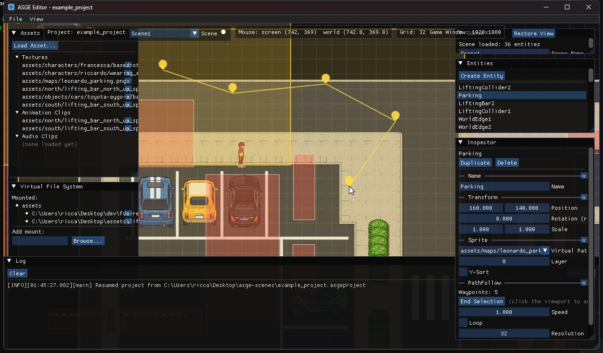
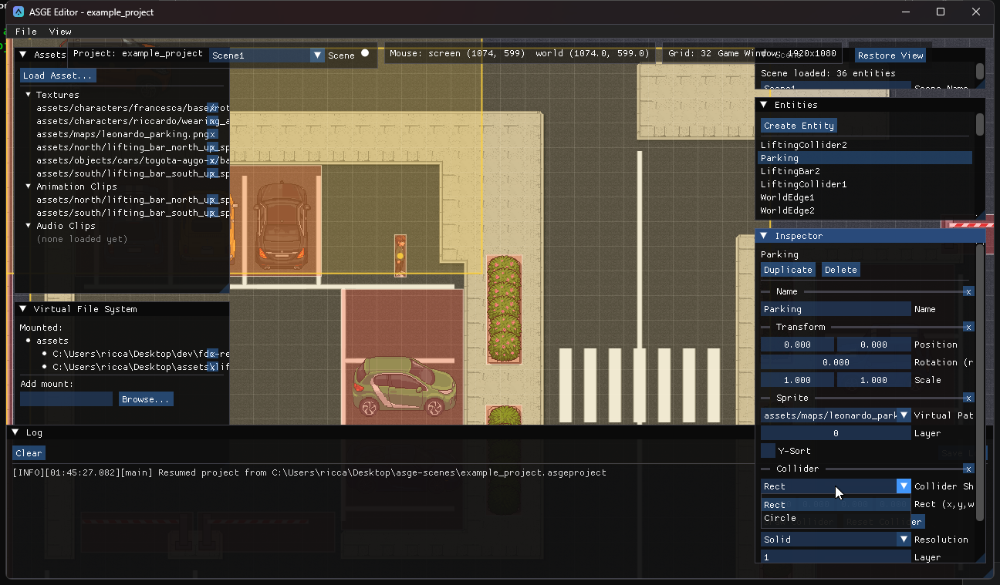
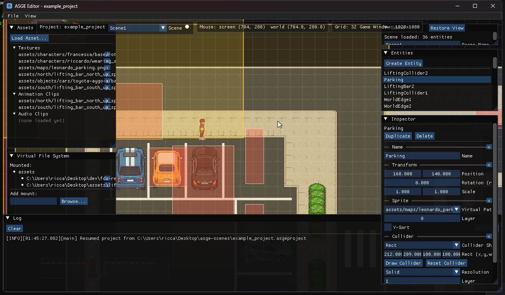

Advanced Editing
Two component types get their own viewport interaction mode instead of raw
number fields: PathFollow's waypoints, and Collider's shape.

PathFollow waypoints
A PathFollow's Inspector section has a Select Waypoints
button that turns the viewport into a click-to-place-a-point surface:
- Click Append a waypoint at the cursor's world position
- Drag a point Move it (a fixed screen-pixel pick radius, so it's grabbable at any zoom)
- Right-click a point Remove it
- ESC Discard everything placed this session, restoring what was there before
- End Selection Commit and exit the mode

Waypoints stay visible as drop/pin markers once selection
ends, not just while placing them. Outside edit mode, an actual Catmull-Rom curve -- the same
interpolation PathFollowingSystem uses at runtime -- overlays the straight
point-to-point lines, sampled at the component's own Resolution so it's a real
preview of the path an entity will follow, not just a rough guide.
Collider shapes


A Collider Shape dropdown (Rect/Circle, default Rect) switches the dimension fields below it -- and remembers each shape's own last dimensions per entity, so switching back and forth doesn't lose either one's values.
Draw Collider enters a one-shot drag-on-the-viewport mode: press to anchor
the shape, drag to grow it (a rect defines opposite corners, a circle's drag sets its radius from
the anchor point), release to commit -- ESC restores whatever shape was there before.
It mutates the live Collider component directly, so the same translucent overlay
every collider already gets shows it updating in real time, with no separate preview code needed.
Reset Collider zeroes the current shape's dimensions.